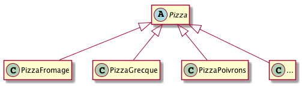
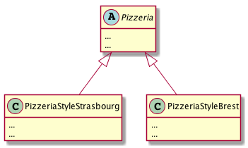

PreReq |
1. Je sais programmer en Java. 2. J’ai conscience qu’il faut réfléchir avant de se lancer dans le codage. 3. Je maîtrise les concepts objet de base (héritage, polymorphisme, …). 4. J’ai compris ce qu’est un patron et j’ai grand soif d’en apprendre d’autres que Strategy et Singleton |
ObjTD |
Aborder le patron fabrique. |
Durée |
1 TD et 2 TP de 1,5h (sur 2 semaines). |
1. Rappel du cours
|
|
N’hésitez pas à (re)lire régulièrement le Support de Cours. |
2. La pizzeria O’Reilly
Vous êtes embauché dans une pizzeria pour faire … de l’informatique!
Le stagiaire de l’an dernier qui avait travaillé sur le code est parti avec la caisse (de Chianti). Vous n’avez à votre disposition sur :
-
Soit le code de départ suivant :
/** * @author bruel (from O'Reilly Head-First series) */ public class Pizzeria { public Pizza commanderPizza(String type) { Pizza pizza; if (type.equals("fromage")) { pizza = new PizzaFromage(); } else if (type.equals("grecque")) { pizza = new PizzaGrecque(); } else { pizza = new PizzaPoivrons(); } pizza.preparer(); pizza.cuire(); pizza.couper(); pizza.emballer(); return pizza; } } -
L’ébauche de diagramme de classe des pizzas suivant :
 -
Le bout de code de test suivant :
Pizzeria boutiqueBrest = new Pizzeria(); boutiqueBrest.commanderPizza("fromage"); ... Pizzeria boutiqueStrasbourg = new Pizzeria(); boutiqueStrasbourg.commanderPizza("grecque");
|
|
QUESTION
|
|
|
Bien sûr vous héritez de cet horrible "if then else" et dans
votre implémentation en TP vous remplacerez ce code avantageusement
par un "switch case" et utilisez une enum comme vu en cours.
|
3. On y est presque…
Nous sommes arrivés à une situation propre, qui s’apparente à un patron de conception. Mais avant d’en arriver à la définition du patron lui-même, nous allons améliorer un peu les choses.
3.1. Succès des pizzerias O’Reilly : les franchises
Plusieurs villes veulent ouvrir des pizzerias comme la votre. Votre patron, très content de vos programmes souhaite imposer à toutes les futures pizzerias d’utiliser vos codes.
Le problème : les pizzas au fromage de Starsbourg sont différentes des pizzas aux fromages de Corse!
|
|
QUESTION
Proposez une solution où |
3.2. La dérive : chacun travaille comme il l’entend!
Les pizzerias utilisent bien vos fabriques mais ont changé les procédures : certains ne coupent pas les pizzas, changent les temps de cuissons, et les pizzerias O’Reilly perdent leur identité. Il nous faut restructurer les pizzerias.
Un consultant italien payé fort cher (heureusement en pizzas!) propose de revenir à la structure suivante :
public abstract class Pizzeria {
public final Pizza commanderPizza(String type) {
Pizza pizza;
pizza = creerPizza(type);
pizza.preparer();
pizza.cuire();
pizza.couper();
pizza.emballer();
return pizza;
}
....... Pizza creerPizza(String type);
}|
|
QUESTION
Quelles sont les différences avec notre conception actuelle? |
3.3. Laisser les sous-classes décider
|
|
QUESTION
Dans le schéma suivant, placez les méthodes au bon endroit de façon à ce que les procédures soient respectées tout en ayant des pizzas à variantes "régionales".

|
3.4. Déclarer une méthode de fabrique
Rien qu’en apportant une ou deux transformations à Pizzeria,
nous sommes passés d’un objet gérant l’instanciation de nos classes concrètes
à un ensemble de sous-classes qui assument maintenant cette responsabilité.
|
|
QUESTION
Quelle est la déclaration exacte de la méthode |
3.5. Récapitulons
|
|
QUESTION
Donnez le diagramme de séquence d’une "commande de pizza au fromage de type Strasbourg". |
|
|
Vous implémenterez les classes manquantes en TP. |
4. Le patron Fabrique (simple)
Nous y sommes, vous venez de décortiquer le patron Fabrique Simple
|
|
Design pattern : Fabrique (simple)
Fabrique (simple) définit une interface pour la création d’un objet, mais en laissant à des sous-classes le choix des classes à instancier (voir aussi Fabrique abstraite). 
Figure 1. Modèle UML du patron Fabrique
|

Pour aller plus loin
Et les pizzas dans tout ça !?
|
|
QUESTION
Proposez un diagramme de classe UML pour les pizzas (classes, attributs et méthodes). |
Et sans patron, ça donne quoi ?
Un stagiaire de l’an dernier (les patrons n’étaient pas au programme du PPN!) a réalisé l’an dernier le programme suivant :
public class PizzeriaDependante {
public Pizza creerPizza(String style, String type) {
Pizza pizza = null;
if (style.equals("Brest")) {
if (type.equals("fromage")) {
pizza = new PizzaFromageStyleBrest();
} else if (type.equals("vegetarienne")) {
pizza = new PizzaVegetarienneStyleBrest();
} else if (type.equals("fruitsDeMer")) {
pizza = new PizzaFruitsDeMerStyleBrest();
} else if (type.equals("poivrons")) {
pizza = new PizzaPoivronsStyleBrest();
}
} else if (style.equals("Strasbourg")) {
if (type.equals("fromage")) {
pizza = new PizzaFromageStyleStrasbourg();
} else if (type.equals("vegetarienne")) {
pizza = new PizzaVegetarienneStyleStrasbourg();
} else if (type.equals("fruitsDeMer")) {
pizza = new PizzaFruitsDeMerStyleStrasbourg();
} else if (type.equals("poivrons")) {
pizza = new PizzaPoivronsStyleStrasbourg();
}
} else {
System.out.println("Erreur : type de pizza invalide");
return null;
}
pizza.preparer(); pizza.cuire(); pizza.couper(); pizza.emballer();
return pizza;
}
}|
|
QUESTION
|
Problème du main de test du jeu d’aventure
Vous avez sûrement dans votre main de l’application de jeu d’aventure
une partie du code ressamblant à ceci :
if (choix.equals("Epee")) {
perso.setArme(new ComportementEpee());
}
else if (choix.equals("Arc")) {
perso.setArme(new ComportementArc());
else if ...
...
}Ce code est peu adaptatif et va soufrir des évolutions, par exemple :
-
changement de la liste des armes possibles
-
rajouter des
if then elseà chaque nouvelle arme -
suppression de certaines armes
-
…
|
|
QUESTION(s)
|
About…
Document réalisé par Dut/Info-S3/M3105 - Semaine 3 (49) via Asciidoctor (version 1.5.2) de 'Dan Allen', lui même basé sur AsciiDoc.
Pour l’instant ce document est libre d’utilisation et géré par la 'Licence Creative Commons'.
 licence Creative Commons Paternité - Partage à l'Identique 3.0 non transposé.
licence Creative Commons Paternité - Partage à l'Identique 3.0 non transposé.